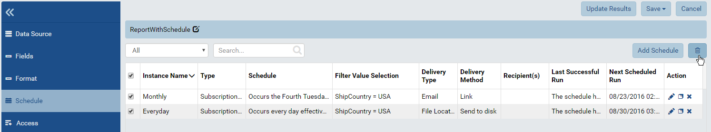
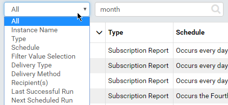
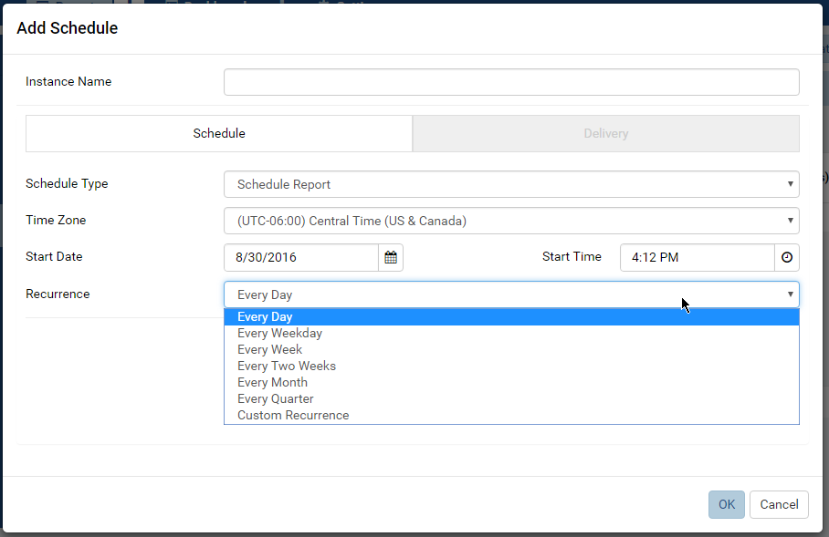
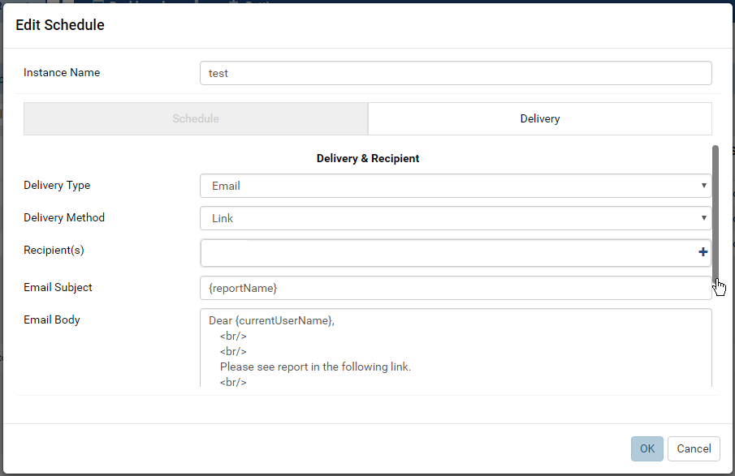
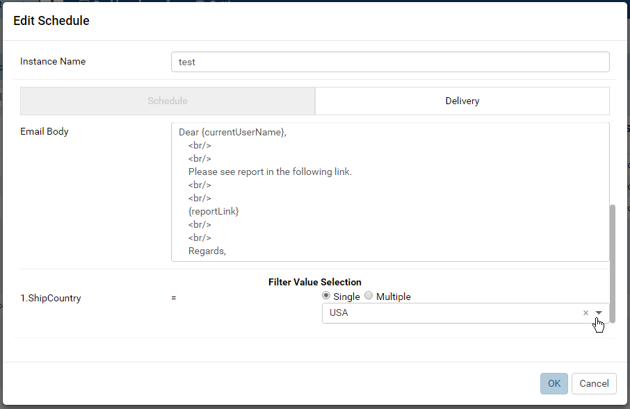

Report Designer/Schedule¶
The Report Designer/Schedule page allows user to
- view scheduled deliveries
- add, copy and remove schedules
View Schedule List¶
- In Report Designer, click Schedule in the left menu.
- Summaries of existing schedules are listed together with delivery options.
- Each schedule can be edited, copied or deleted using the icons in Action field.
- New schedule can be added using the Add Schedule button above the list.

{kind=link}
Fig. 229 Report Schedule List
Note
To delete multiple schedules at the same time, tick the checkbox in front of them then click the delete icon above the list (that looks like a waste basket).
Search for Schedules¶

{kind=link}
Fig. 230 Report Schedule Search
- Select a field to search in from the drop-down, default is All.
- Enter a partial text and click the search icon (🔍).
- Only matching schedules will be displayed.
Add a Schedule¶
Click the Add Schedule button above the list to open the Add Schedule pop-up.
Enter a name for this schedule.
In Schedule tab:
- Select Scheduling Type:
- Scheduled Alert: deliver only if it has data at scheduled time.
- Scheduled Reporting Item: deliver regardless whether it has data or not at scheduled time.
- Select a more suitable time zone than the default if needed.
- Select a start date in the future.
- Enter the start time (some common values can be quickly selected from the pre-defined list).
- Select a common recurrence period from the list, or select Custom Recurrence to define a different one.
Fig. 231 Report Schedule
- Select Scheduling Type:
In Delivery tab, select:
- “Email” Delivery Type: send the report to the email address of
selected users.
- Select Delivery Method: email a Link, email an Attachment, or email with Embedded HTML body.
- Customize the default template if necessary.
- “File Location” Delivery Type: save the report as a file.
- Delivery Method is Send to disk.
- Select the Export File Type: PDF, Word Doc, Excel or CSV.
Fig. 232 Report Schedule Delivery
- “Email” Delivery Type: send the report to the email address of
selected users.
Optionally re-select values for report filters.
Fig. 233 Report Schedule Filter
Click OK to close Add Schedule pop-up.
Click Save at the top to save the Report.
{kind=link}
{kind=link}
{kind=link}